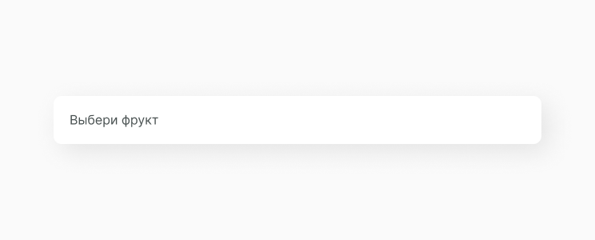
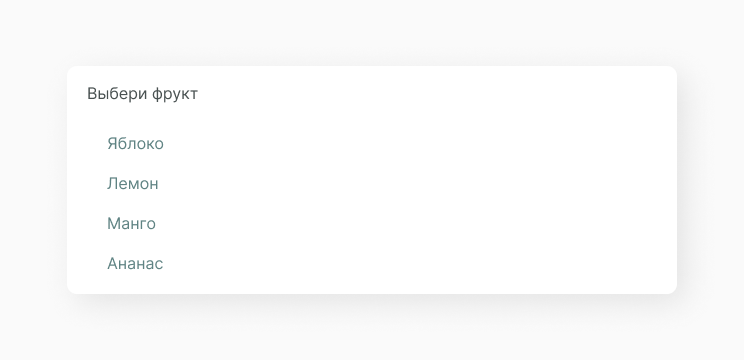
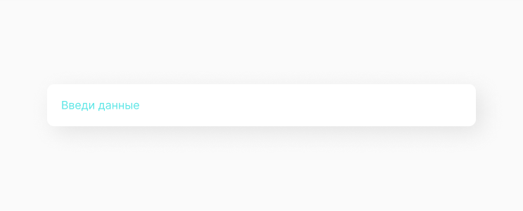
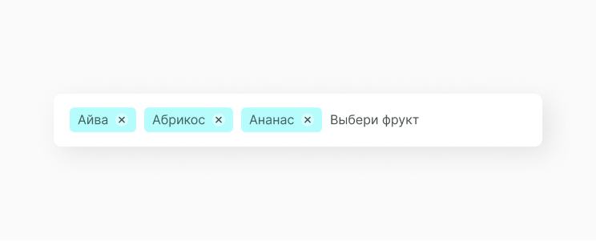
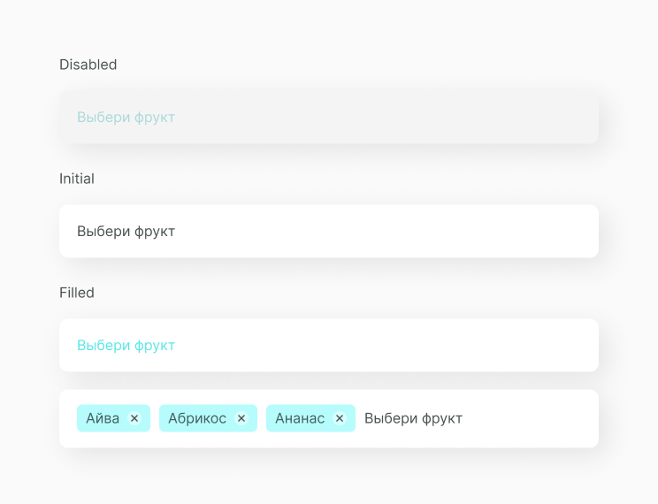
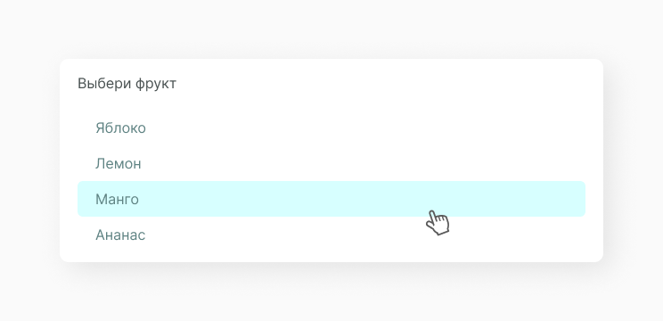

Select and Multiselect Input
В HTML тег <select> позволяет создать элемент интерфейса в виде раскрывающегося списка, а также список с одним или множественным выбором. Но обычно мы его не используем, так как такой элемент уже имеет собственные настройки стилей и его сложно кастомизировать под необходимый дизайн.
Вместо <select> мы используем <div>. Также используем <div> и для выпадающего списска с контентом.
Структура компонента
Select бывает с единичным выбором и с множественным. В зависимости от этого input заполняется по разному. В select с единичным выбором заполняется вся строка input, а в селекте с множественным строка заполняется chip. Компонент состоит из input и option list.
Input
Элемент input является основным элементом формы и определяет интерактивное поле для ввода информации.
Options List
Options List — это список возможных объектов для выбора значения input. Опции содержат строки данных и обычно имеют такой размер, чтобы всегда были видны несколько строк. Строки могут содержать один или несколько столбцов с заголовками или без них. Если options содержит больше строк, чем может быть отображено в элементе управления, появится скролл. Выбор ограничен вариантами, представленными в списке, но в зависимости от функциональности через input можно добавить новый элемент списска.
Filled Input
При единичном выборе значения из списка input выглядит таким образом. Подробнее про такой вид компонента select input.
При множественном выборе значения из списка input выглядит таким образом. Подробнее про такой вид компонента multiselect input.
Состояние компонента
Исходя из структуры, мы можем выявить несколько состояний компонента с данными и без них.
А также состояние инпута, когда открыт option list.
Ссылки
Также для тебя ссылки на Figma с дизайн системой и GitHub с библиотекой компонентов.
Составляющие
В этот компонент часто выводятся следующие компоненты.
Chip
Интерактивный элемент множественного выбора.
Option Item
Функциональный элемент выпадающего списка.
Этот компонент часто выводится в следующих компонентах.